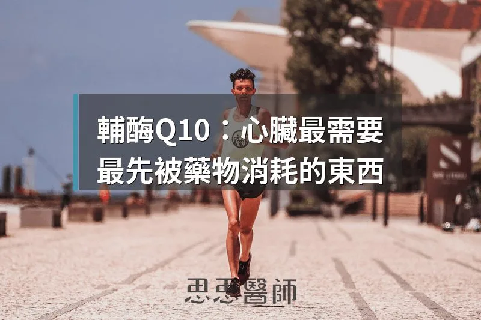

輔酶Q10：心臟最需要，最先被藥物消耗的東西

有一種物質，你的每一顆細胞都在使用它，但你的身體從來不會主動告訴你它快用完了。等到出現症狀，它可能已經悄悄消耗了好幾年。
輔酶Q10（Coenzyme Q10，簡稱 CoQ10），這個名字可能你聽過，但很多人對它的了解只停留在「一種抗氧化劑」。實際上，它遠遠不只這樣。CoQ10 是細胞製造能量的核心零件，沒有它，粒線體就無法正常運轉。
更麻煩的是，我們會在不知不覺中消耗它。年齡增長、某些藥物、慢性疾病，都會讓 CoQ10 的存量愈來愈少。而最悄悄消耗它的，是一類全球用量最大的心臟藥物。
粒線體的電子載體：沒有 CoQ10，ATP 就造不出來
要理解 CoQ10 的重要性，要先從能量製造說起。
我們吃進去的食物，最終都會轉換成一種叫做 ATP（腺苷三磷酸，Adenosine Triphosphate）的能量貨幣。這個轉換過程發生在粒線體內膜上，透過一條叫做「電子傳遞鏈（Electron Transport Chain）」的流程完成。
電子傳遞鏈分成幾個複合體（Complex I、II、III、IV），CoQ10 的角色是在 Complex I 和 Complex III 之間穿梭，把電子從前面接過來，傳遞給後面，讓整條鏈可以持續運轉，最終驅動 ATP 合成酶（ATP Synthase）製造出 ATP。
換句話說，CoQ10 不是能量的原料，而是讓能量生產線能夠運轉的關鍵零件。少了它，這條生產線就會停擺，不管你吃多少葡萄糖或脂肪，細胞都無法有效率地轉換成能量。
心臟從不休息，所以它對 CoQ10 的依賴最深
全身的器官都需要 CoQ10，但心臟對它的依賴程度遠超過其他器官。原因很簡單：心臟是全身唯一從不休息的肌肉。
一個人一生中，心臟大約跳動三十億次以上。每次跳動都需要大量的 ATP，而每個 ATP 的製造都需要 CoQ10 的參與。因此，心肌細胞裡粒線體的密度是全身最高的，而 CoQ10 的濃度也是全身器官中最高的。
研究顯示，心臟組織裡的 CoQ10 濃度比其他組織高出許多。這不是巧合，而是心臟長期高強度運作的必然結果。
這也是為什麼當 CoQ10 下降的時候，心臟往往是最先感受到影響的器官。心肌的能量危機，在很多時候其實就是 CoQ10 的危機。
25 歲之後，CoQ10 就開始下坡
人體可以自行合成 CoQ10，但這個能力不會維持一生。
大約在 25 歲左右，CoQ10 的自然合成量達到高峰，之後就逐年下降。到了 40 歲，心肌裡的 CoQ10 濃度可能已經比年輕時少了 30% 到 40%。到了 70、80 歲，這個數字還會繼續往下。
這個下降的速度因人而異，但幾乎沒有人可以免疫。你可能感覺不到，因為身體很擅長在代償期間維持表面上的正常運作，但細胞層面的能量效率其實已經悄悄在打折了。
這也是為什麼我在臨床上看到的許多人，說自己「不像以前那麼有精神」、「心跳有時候感覺不太對勁」，背後的原因之一，很可能就是這條能量製造鏈已經在老化的過程中出現了缺口。
Statin 在節省膽固醇的同時，也把 CoQ10 一起省掉了
如果你正在服用 Statin（他汀類藥物），這一段特別重要。
Statin 是全球處方量最大的藥物之一，用來降低 LDL 膽固醇，透過抑制一個叫做「HMG-CoA 還原酶（HMG-CoA Reductase）」的酵素來達到效果。這個酵素是肝臟製造膽固醇的關鍵步驟。
問題在於：CoQ10 的合成路徑和膽固醇的合成路徑，共用這條 HMG-CoA 還原酶的步驟。Statin 抑制了這個酵素之後，膽固醇的產量下降了，但 CoQ10 的產量也跟著下降。
這不是藥物的副作用列表裡才有的罕見現象。研究顯示，服用 Statin 可能使血液中的 CoQ10 濃度下降 16% 到 54%。下降幅度因藥物種類和劑量不同而有差異，但方向是一致的：往下。
這個現象解釋了一個讓很多人困惑的問題：為什麼部分服用 Statin 的患者會出現肌肉痠痛、無力，也就是臨床上說的「statin myopathy（他汀肌肉病變）」？
肌肉細胞也需要 CoQ10 來製造 ATP。當 CoQ10 被 Statin 間接消耗之後，肌肉細胞的能量產出下降，就容易出現痠痛和疲乏。這也是為什麼在部分研究中，補充 CoQ10 有助於改善 Statin 相關的肌肉不適症狀。
我並不是說 Statin 不應該用，對於已經有心血管疾病的高風險族群，Statin 的益處是有充分證據支持的。但如果你正在服用 Statin，同時又感覺肌肉容易痠、疲倦，補充 CoQ10 這件事值得認真考慮。
Q-SYMBIO 試驗：CoQ10 讓心臟衰竭死亡風險降低 43%
講了這麼多機轉，我們來看真實的臨床試驗數據。
2014 年發表在《JACC Heart Failure》期刊上的 Q-SYMBIO 試驗（PMID: 25282031），是目前針對 CoQ10 與心臟衰竭最重要的隨機對照試驗之一。
這個試驗納入了 420 名慢性心臟衰竭患者，隨機分配到兩組：一組每天補充 CoQ10 共 300mg（每次 100mg，每天三次），另一組服用安慰劑，追蹤時間長達兩年。
結果相當顯著：CoQ10 組的主要不良心血管事件（MACE）發生率，比安慰劑組下降了 50%（風險比 0.50，信賴區間 0.27–0.95），達到統計顯著。
在心血管死亡率方面，CoQ10 組的死亡風險降低了 43%。這在慢性心臟衰竭的治療領域，是一個相當有意義的數字。
研究者的結論是：CoQ10 是安全的，耐受性良好，而且對心臟衰竭患者的長期預後有實質幫助。這個結果和 CoQ10 作為粒線體能量載體的機轉完全吻合：心臟衰竭本質上是一種能量危機，而補充 CoQ10 有助於補上這個能量缺口。
Ubiquinol 還是 Ubiquinone？吸收率差了 2 到 3 倍
如果你決定補充 CoQ10，你會發現市面上有兩種形式：Ubiquinone（氧化態）和 Ubiquinol（還原態）。它們有什麼差別？
Ubiquinone 是傳統的 CoQ10 形式，也是大部分早期研究使用的版本。Ubiquinol 是 CoQ10 的還原態，也就是已經「準備好工作」的活性形式。在體內，Ubiquinone 必須先轉換成 Ubiquinol 才能真正發揮作用。
研究顯示，Ubiquinol 的生物可利用率（Bioavailability）比 Ubiquinone 高出約 2 到 3 倍。也就是說，吃同樣的劑量，Ubiquinol 實際進入血液循環的量更多，效率更高。
這個差異在年輕人身上不那麼明顯，因為年輕的身體有足夠的還原能力，可以把 Ubiquinone 有效轉換成 Ubiquinol。但到了 40 歲以上，或者本身有代謝問題、氧化壓力較高的情況下，這個轉換效率會下降。這時候直接補充 Ubiquinol 就更有優勢。
如果你是 40 歲以上、正在服用 Statin、或者已經有心臟相關問題，我會優先建議選擇 Ubiquinol 形式，吸收率更好，不需要依賴身體的轉換步驟。
食物裡有 CoQ10，但量遠遠不夠
CoQ10 在食物中確實存在，含量最高的包括：牛心、沙丁魚、牛肝、豬肉、雞肉、以及堅果類。
但這裡有一個現實：即使是含量最高的牛心，100 克裡大約只有 11 到 13mg 的 CoQ10。要達到臨床試驗中使用的 300mg 劑量，你需要吃下大約 2 到 3 公斤的牛心。
一般正常飲食每天從食物攝取的 CoQ10 大約只有 3 到 6mg，距離有治療意義的劑量差了一到兩個數量級。所以如果目標是真的補充到足夠的量，食物來源幾乎是杯水車薪，補充劑是更實際的選擇。
劑量與服用時機：脂溶性，飯後吃最重要
CoQ10 的補充劑量，要看你的目標和狀況：
一般保健（健康成人）：100 到 200mg／天，分 1 到 2 次服用
Statin 使用者或有肌肉症狀：200 到 300mg／天，分次服用
心臟衰竭或其他心血管疾病：300mg／天，分 3 次（每次 100mg），與 Q-SYMBIO 試驗一致
最重要的一個細節：CoQ10 是脂溶性的物質，配合含油脂的餐食一起服用，吸收率可以顯著提升。空腹吃的話，很大比例會白白浪費掉。飯後吃，或者跟一小匙橄欖油一起服用，都是讓吸收率最大化的好方法。
CoQ10 的安全性相當高，目前研究顯示每天高達 1200mg 的劑量仍在安全範圍內，沒有嚴重副作用的報告。少數人在高劑量時可能有輕微的腸胃不適，分次服用可以改善。
你的心臟每一秒都在跳動，給它需要的能量
CoQ10 不是什麼神奇補充劑，它是你的細胞本來就需要的東西，只是隨著年齡和某些藥物的影響，身體製造它的能力愈來愈不夠用。
特別是如果你已經 40 歲以上、正在服用 Statin、或者心臟本身就有狀況，CoQ10 的補充不是可有可無的選項，而是相當有據可查的支持策略。
從 Q-SYMBIO 試驗的結果來看，每天 300mg 的 CoQ10 對心臟衰竭患者的幫助是真實存在的，數據清楚、機轉也說得通。這不是偶然，而是能量醫學在心臟領域最具體的一個應用。
你的心臟每一秒都在跳動，從不休息。給它需要的能量，是我們能做到最基本、也是最重要的事情之一。
 空腹小雞跟思思醫師一起斷食，順便養一隻小雞來養小雞 →
空腹小雞跟思思醫師一起斷食，順便養一隻小雞來養小雞 →
好朋友週信
每週五一封：《健康駭客週報》這集的研究重點，加上家醫專欄這週的新文章。免費，隨時可以退訂。
延伸閱讀

納豆激酶能溶解血管斑塊嗎？劑量與證據一次看清
納豆激酶的正向結果主要來自每天 10,800 FU 的高劑量，3,600 FU 無效，文中提醒使用抗凝血藥物者不可自行補充。

因紐特人和心臟病，一個持續了五十年的誤會
因紐特人因低碳飲食無心臟病的說法流傳五十年，但實際研究顯示他們的心血管疾病發生率與其他族群相近甚至更高。

原型食物中的超級維生素，鱈魚肝
鱈魚肝罐頭的 omega-3 與維生素 D 含量遠高於沙丁魚，維生素 A 也極高但有攝取上限，作者建議每週兩到三次、每次一到兩湯匙。